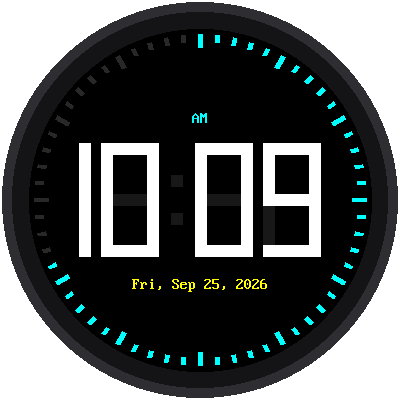
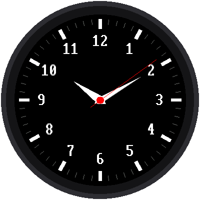

title: Color Displays and Smartwatch Faces description: Color TFT and round smartwatch displays: RGB565, palettes, ILI9341, ST7735, GC9A01, GC9B72, and analog and digital watch faces. generated_by: claude skill chapter-content-generator date: 2026-09-28 14:45:59 version: 1.10
Color Displays and Smartwatch Faces
Summary
Students encode colors in RGB565, choose palettes, and drive ILI9341, ST7735, and GC9A01 displays. They draw analog hands and digital faces on a round screen. After this chapter they can build a color smartwatch face.
Concepts Covered
This chapter covers the following 20 concepts from the learning graph:
| Concept | Concept Impact Score |
|---|---|
| Color Palette | 32 |
| RGB565 Color Encoding | 27 |
| Color Display | 24 |
| Color565 Function | 2 |
| TFT LCD | 9 |
| Colors File | 1 |
| Round Display | 9 |
| Contrast Ratio | 2 |
| Viewing Angle | 2 |
| ILI9341 Driver | 2 |
| ST7735 Driver | 2 |
| GC9A01 Driver | 4 |
| Display Rotation | 1 |
| Smartwatch Display | 2 |
| Clock Hands | 3 |
| Digital Clock Face | 4 |
| Direct Write Display | 1 |
| Clock Tick Marks | 2 |
| Rotating Hands | 1 |
| Analog Clock Face | 1 |
Prerequisites
This chapter builds on concepts from:
- Chapter 2: Electronics Fundamentals and Breadboard Wiring
- Chapter 3: MicroPython Basics: Variables and Data Types
- Chapter 4: Control Flow, Functions, and Modules
- Chapter 5: The Pico Platform: Pins, Files, and Firmware
- Chapter 6: Getting the Time in MicroPython
- Chapter 8: Communication Buses: I2C, SPI, and UART
- Chapter 9: LED Displays and the First Digital Clock
- Chapter 10: Coordinates, Trigonometry, and Clock Geometry
- Chapter 11: OLED Displays and Framebuffers
- Chapter 12: Drawing Shapes, Text, and Animation
Welcome to Full Color
 Time to leave black and white behind. In this chapter you'll learn how a screen mixes 65,536 colors, then use them to draw a round smartwatch face with ticks, numerals, and sweeping hands. Let's make time tick!
Time to leave black and white behind. In this chapter you'll learn how a screen mixes 65,536 colors, then use them to draw a round smartwatch face with ticks, numerals, and sweeping hands. Let's make time tick!
Color and the Round Screen
The OLED in Chapter 11 has two colors: on and off. The displays in this chapter can show tens of thousands of colors, and several of them are round, like a real watch. That brings new ideas: how a color is stored in just 16 bits, how to choose colors people can read, how to draw on a circular screen, and how to update a screen too big for a full framebuffer. We will build both a digital and an analog watch face.
Color Display
A color display can show many different colors at each pixel instead of just on and off. Each pixel is made of three tiny sub-pixels, one red, one green, and one blue, whose brightness is mixed to make any color. If all three are at full brightness, you see white. If all three are off, you see black.
The displays in this course connect over SPI (Chapter 8) and share the same overall workflow as the OLED, but each has a different size and controller chip:
| Display | Size | Resolution | Shape | Approx. cost |
|---|---|---|---|---|
| ST7735 | 1.8 inch | 160 × 128 | Rectangle | about $3.50 |
| ILI9341 | 2.8 inch | 320 × 240 | Rectangle | about $9 |
| GC9A01 | 1.28 inch | 240 × 240 | Round | see Purchasing Parts |
| GC9B72 | 2.1 inch | 360 × 360 | Round | see Purchasing Parts |
TFT LCD
Most of these displays are TFT LCDs. TFT stands for thin-film transistor: a tiny transistor sits behind every pixel and switches it, which gives a sharp, fast, stable picture. An LCD does not make its own light, so a backlight shines from behind. That is why these modules have a BL pin. Wiring BL to 3.3 V keeps the backlight fully on, and you can connect it to a GPIO pin to switch it on and off or dim it with PWM.
The backlight is the largest consumer of power on the display, which matters for battery-powered watches (Chapter 18).
RGB565 Color Encoding
Storing a color for every pixel takes memory, so the small displays use a compact encoding called RGB565. It packs a color into just 16 bits: 5 bits of red, 6 bits of green, and 5 bits of blue. Green gets the extra bit because the human eye is most sensitive to green.
1 2 | |
Five bits give 32 levels of red, six give 64 levels of green, and five give 32 levels of blue, so there are \( 32 \times 64 \times 32 = 65{,}536 \) possible colors. A standard "true color" image uses 8 bits per channel (256 levels), so RGB565 throws away the lowest bits of each. You lose a little smoothness in gradients, but the memory drops by a third from 24 bits to 16, and each pixel is exactly 2 bytes.
Some values are worth memorizing:
| Color | RGB565 value |
|---|---|
| Black | 0x0000 |
| White | 0xFFFF |
| Red | 0xF800 |
| Green | 0x07E0 |
| Blue | 0x001F |
| Yellow | 0xFFE0 |
The color565 Function
You rarely calculate RGB565 by hand. The driver provides the color565(red, green, blue) function, which takes three ordinary 0 to 255 values and returns the packed 16-bit number. It keeps the top 5 or 6 bits of each channel and shifts them into place:
1 2 3 4 5 | |
The shifts and masks are the bit operations from Chapter 8 at work.
Red and Blue Swapped?
If your reds appear blue and blues appear red, the display expects the color channels in a different order (BGR instead of RGB), or the two bytes of each color are swapped. Most drivers have a setting for it; check the driver's options before rewriting any of your colors.
Color Palette
A color palette is the small, chosen set of colors your program uses. Restricting yourself to a palette makes a watch face look designed instead of random, and it makes colors easy to change in one place.
Good palette habits for readable clocks:
- Choose 4 to 6 colors: a background, a main text color, an accent, and one or two extras.
- Use a dark background with light text. It is easier to read and saves power on OLED-type screens.
- Reserve one bright accent (such as red for the second hand) for the one thing you want the eye to find.
- Do not rely on red versus green alone to carry meaning, since roughly 8 percent of men have trouble telling them apart. Pair color with shape or position.
The Colors File
Keep the palette in one place, either in config.py or in a dedicated colors.py, and import it everywhere. This is the config-file pattern from Chapter 5 applied to color.
1 2 3 4 5 6 7 8 | |
Changing ACCENT once restyles every screen. The smartwatch kit's config.py uses exactly this approach with config.BLACK, config.WHITE, config.RED, and config.GRAY.
Diagram: RGB565 Color Mixer
RGB565 Color Mixer
Type: MicroSim
sim-id: rgb565-color-mixer
Library: p5.js
Status: Specified
Learning objective: Students will apply the RGB565 packing formula and analyze how many bits of color detail are lost (Bloom: Applying, Analyzing).
Visual elements: A large color swatch, with a second swatch showing the color after quantizing to RGB565. Beneath them, the 16 bits are drawn in three colored groups (5, 6, 5).
Controls: Three sliders (red, green, blue, 0 to 255), a readout of the 16-bit binary, the hex value, and the color565() call. A "Gradient" toggle shows a smooth ramp in 8-bit and in RGB565 to make the banding visible. A "Predict" mode asks the student for the hex value of a given color.
Responsive design: Swatches and bit groups stack below 600 px.
Implementation: p5.js with bit operations matching the formula above.
Contrast Ratio
Contrast ratio compares the brightness of the lightest and darkest areas, and it is what makes text readable. It is written as a ratio such as 21:1, where higher is easier to read. White text on black has the maximum, 21:1. Yellow text on a white background is only about 1.1:1, which is nearly invisible.
A rule of thumb: for text, aim for at least 4.5:1. Mid-gray on black is about 5:1, which is fine for tick marks but too dim for small text. TFT LCDs have a lower native contrast than OLEDs, because their backlight leaks through "black" pixels, so a dark gray on black is less readable on a TFT than it looks on your computer monitor.
Viewing Angle
Viewing angle is how far off-center you can look at a screen before the colors wash out or invert. It is measured from straight-on. IPS panels, common on the round watch displays, hold their colors to about 160 degrees or more. Older, cheaper TN panels fade quickly when viewed from above or below. OLEDs are wide too.
Viewing angle matters for a watch, because you never look at your wrist straight-on. When you choose a display for a wearable, choose an IPS panel.
Display Drivers for Color Screens
Each controller chip needs its own driver library, which you copy to the Pico as in Chapter 4. The libraries differ in details, such as the names of functions, but the workflow is the same:
- Create an SPI bus with the baudrate you have tuned (Chapter 11).
- Create the display object, passing the SPI bus and the DC, CS, reset, and backlight pins.
- Draw with the driver's calls: fill, line, rectangle, text.
ILI9341 Driver
The ILI9341 is a 320 by 240 rectangular controller and the largest of the common low-cost color screens. Its size makes it a good "clock on the wall" display. The driver exposes fonts through its own text calls, and supports rotation so the screen can be used in landscape or portrait.
ST7735 Driver
The ST7735 drives the small 160 by 128 screens, at the lowest price of the color options. Its small size means a small framebuffer and fast updates, which makes it a good first color display. Some ST7735 modules need a small offset setting so the image lines up with the glass. If a colored line appears along one edge, that is the reason.
GC9A01 Driver
The GC9A01 drives a round 240 by 240 display about 1.28 inches across, the size of a small watch. The visible area is a circle, so the corners of the 240 by 240 grid are hidden under the bezel. This driver is the one used in the earlier smartwatch kit, and its constructor takes the SPI object, the pin numbers, and a rotation setting.
The GC9B72 Smartwatch Kit
The 2.1 inch GC9B72 in the smartwatch kit is a larger round display at 360 by 360 pixels. The kit uses a Pico 2 W, which has the same pin layout as the Pico W, and its config.py describes every wire (SCL to GP2, SDA to GP3, RST to GP4, DC to GP5, CS to GP6, and BL to GP7). A real detail from that file is worth remembering: the SPI clock you ask for is not always the clock you get. The Pico can only make certain speeds, and it rounds down. Asking for 20 MHz actually gives 12 MHz, and 24 MHz is the ceiling. Print the SPI object to see the real rate.
Round Display
A round display has a circular visible area, even though the controller addresses a square grid of pixels. Anything drawn in the corners is under the bezel and never seen, so drawing there wastes time on every update.
Three numbers describe the geometry, and you met the first two in Chapter 10:
| Value | 360 px kit | Meaning |
|---|---|---|
| Center | (180, 180) | The middle of the square |
| Radius | 180 | The edge of the glass |
| Safe radius | 168 | The largest circle you can fully see |
The safe radius leaves a margin for the bezel that covers the outermost pixels. Keep all important content inside it. For text, the width available depends on how far the row is from the center. At a vertical distance \( d \) from the center, the available width is the chord of the circle:
Worked example. A line of text 100 pixels above the center with a safe radius of 168 has \( w = 2\sqrt{168^2 - 100^2} = 2 \times 135 = 270 \) pixels available, much less than the full 360.

Smartwatch Display
A smartwatch display is a small, round or square screen designed to be worn. The design constraints are unlike a wall clock. The screen is small, so text must be large and few. It must be readable at an angle. It runs on a small battery, so the backlight and update rate should be modest. The round shape dictates the safe radius and the chord rule above, and a wrist watch is glanced at for one or two seconds, so the time must stand out at once.
Display Rotation
Display rotation turns the whole picture in 90-degree steps, so that the display can be mounted with the connector at any side. Drivers accept a value from 0 to 3, which selects one of four orientations:
1 | |
On a rectangular screen like the ILI9341, a rotation of 1 or 3 also swaps the width and height (320 by 240 becomes 240 by 320). On a round screen it changes where "up" is, which decides which side the USB cable and buttons end up on.
Direct Write Display
A large color display needs a lot of memory for a full framebuffer. A 360 by 360 screen at 2 bytes per pixel needs \( 360 \times 360 \times 2 = 259{,}200 \) bytes, nearly the entire 264 KB of RAM on a Pico (Chapter 11). A direct write display avoids this by sending pixels straight to the display's own memory, with no copy in the Pico. You tell the display a rectangular window, and then stream colors into it.
The GC9B72 driver works this way. There is no show(). Every call, such as fill_rect() or text(), changes the glass immediately:
| Framebuffer display (OLED) | Direct write display (GC9B72) |
|---|---|
Draw into RAM, then show() |
Every call draws at once |
| Redraw the whole frame freely | Redrawing everything each second flickers |
| Needs RAM for the whole frame | Needs almost no RAM |
| Simple to write | Needs careful, partial updates |
The consequence is a change in strategy. Instead of clearing and redrawing everything, you draw the static parts once (the dial, ticks, and numerals) and then, each second, update only what changed, using the bounding-box and partial-update ideas from Chapter 12.
No Curtain, So Be Careful
 A framebuffer lets you paint behind a curtain and reveal the finished picture. A direct write display has no curtain: the audience sees every brush stroke. So you paint the background once, and afterward touch only the small pieces that move.
A framebuffer lets you paint behind a curtain and reveal the finished picture. A direct write display has no curtain: the audience sees every brush stroke. So you paint the background once, and afterward touch only the small pieces that move.
Digital Clock Face
A digital clock face shows the time as numbers. On a color round display, the design choices are size, position, and color. The driver's text() call takes a font module, the string, the x and y position, and a foreground and background color, so old characters are painted over automatically as long as the new text is the same width:
1 2 3 4 5 6 7 8 9 10 11 12 13 14 15 16 17 18 | |
Notice three design decisions. The time is formatted to a constant width (zero-padded), so a new value always covers the old one exactly. The x position is computed to center the text using the character width. And the background color is passed to text() so the screen never needs clearing.
Analog Clock Face
An analog clock face shows the time with hands sweeping over a dial. It draws on everything from the math chapter, using the geometry from Chapter 10 with the display's center and safe radius. Its parts, from the outside in, are the tick marks, the numerals, and the hands.

Clock Tick Marks
Tick marks ring the outer edge. There are 60 small ticks for the minutes and 12 wider or longer marks for the hours. They are computed with the same formula as before:
1 2 3 4 5 6 7 8 9 10 11 12 13 14 | |
The ticks are drawn once at startup. The kit places them outside the longest hand, so a moving hand never crosses and damages them.
Clock Hands
Clock hands are the three pointers for hour, minute, and second. Each has its own length, thickness, and color so they can be told apart:
| Hand | Length (of 180 px) | Color | Notes |
|---|---|---|---|
| Hour | About 60 | White | Shortest, thickest |
| Minute | 92 | White | Reaches just short of the numerals |
| Second | 138 | Red | Longest, thinnest, with a short tail behind the center |
A hand is a line from the center to a tip computed with polar(). Thicker hands can be drawn as a filled polygon, using the shapes.poly() helper, with the rotation math from Chapter 10.
Rotating Hands
Rotating hands means making the hands move, which on a direct write display requires care. You cannot just draw the new hand, since the old one is still on the glass. The approach in the kit's lab 05 is:
- Erase the old second hand by drawing it again in the background color.
- Repair anything the erase damaged, such as a numeral it crossed.
- Draw the new hands in their new positions.
The minute and hour hands change rarely, so they are erased and redrawn only when the minute changes.
1 2 3 4 5 6 7 | |
The dial layout is designed so that few things can be damaged by an erase, and the design does the hard work: the ticks sit outside the longest hand, and the numerals lie outside the minute and hour hands.
Design the Layout to Avoid Repairs
 Every overlap costs you an extra repair step. Place static items, like ticks and numerals, where the moving hands never reach, and your update loop stays tiny and fast.
Every overlap costs you an extra repair step. Place static items, like ticks and numerals, where the moving hands never reach, and your update loop stays tiny and fast.
Diagram: Analog Watch Face Builder
Analog Watch Face Builder
Type: MicroSim
sim-id: analog-watch-face-builder
Library: p5.js
Status: Specified
Learning objective: Students will create an analog face by choosing radii and colors, and analyze which parts an erased hand damages (Bloom: Analyzing, Creating).
Visual elements: A 360 by 360 round display with the safe-radius ring drawn faintly. Layers: ticks, numerals, three hands.
Controls: Sliders for tick outer radius, minute hand length, second hand length, and numeral radius. A toggle "Erase mode" replaces the old second hand with black and highlights in yellow any pixels of other items that get erased. A "Play" button advances the seconds.
Behavior: The readout says "Repairs needed: none" when hand lengths keep clear of numerals and ticks, and lists conflicts otherwise.
Responsive design: The display scales to container width.
Implementation: p5.js with polar geometry and an overlap test on bounding circles.
Putting It Together
| Task | Approach |
|---|---|
| Make a color | color565(r, g, b) or a named constant from colors.py |
| Choose colors | 4 to 6 in a palette; dark background; high contrast |
| Fit a round screen | Stay inside the safe radius; use the chord rule for text |
| Update a direct write display | Draw static parts once; update only what changed |
| Analog face | Ticks, numerals, then hands computed with polar() |
| Digital face | Constant-width text with a background color |
Key Takeaways
- Each pixel of a color display mixes red, green, and blue; RGB565 packs a color into 16 bits (5, 6, 5).
color565()builds a color from 0 to 255 values; store the palette in one file.- Contrast ratio and viewing angle decide whether a display is readable, especially on a wrist.
- Round displays have a center, a radius, and a smaller safe radius; use the chord rule for text width.
- A 360 by 360 framebuffer would use nearly all of the Pico's RAM, so the GC9B72 draws directly, with no
show(). - On a direct write display, draw the static face once and erase and redraw only the moving parts.
A Watch in Full Color
 You can now encode colors in RGB565, build a palette, fit content to a round screen, and draw analog and digital faces without flicker. That's a real smartwatch face. Every second counts!
You can now encode colors in RGB565, build a palette, fit content to a round screen, and draw analog and digital faces without flicker. That's a real smartwatch face. Every second counts!
Practice Questions
- How many bits does RGB565 use for each of red, green, and blue, and why does green get the extra bit?
- Compute the RGB565 value for pure blue and for (255, 255, 0). Check them against the table.
- A 320 by 240 display uses 2 bytes per pixel. How many bytes does a full framebuffer need? Will it fit in 264 KB of RAM?
- On the 360 px display with a safe radius of 168, how wide is the usable row 120 pixels above center?
- Explain why a direct write display draws the tick marks once instead of every second.